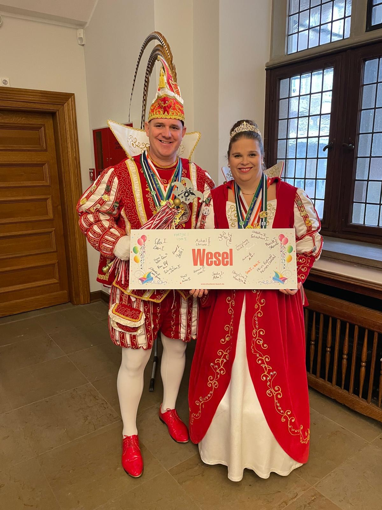
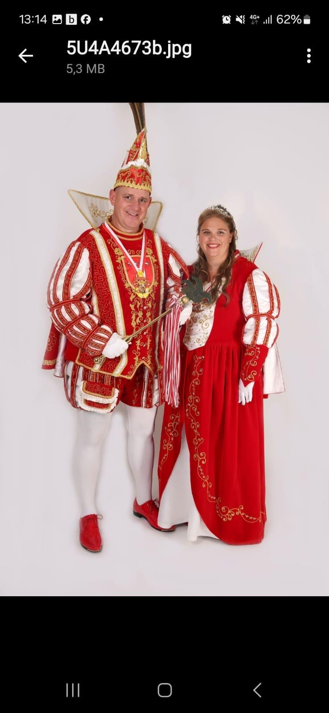
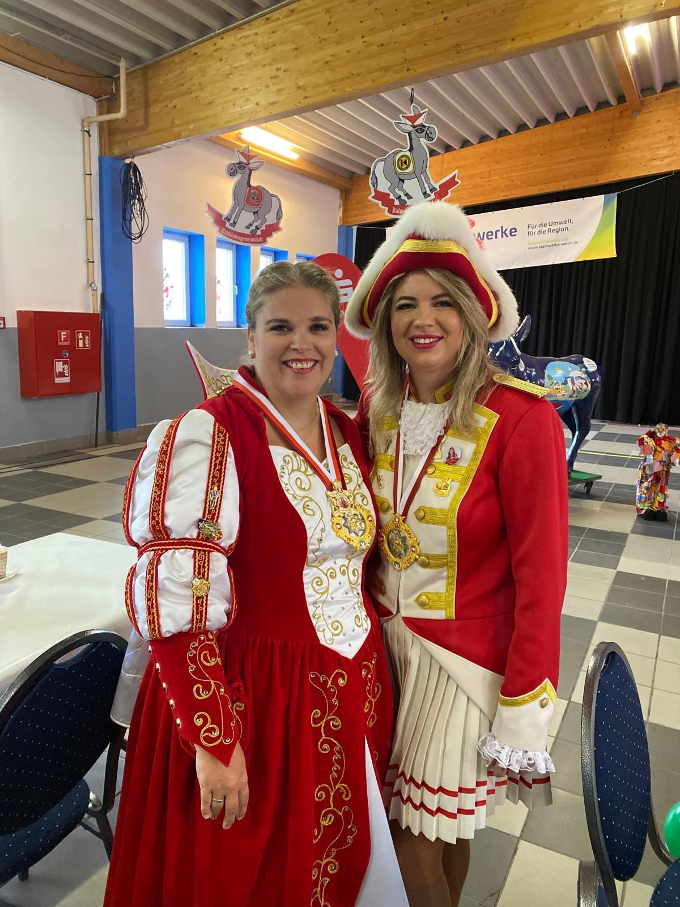
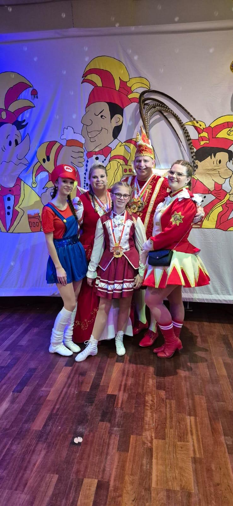
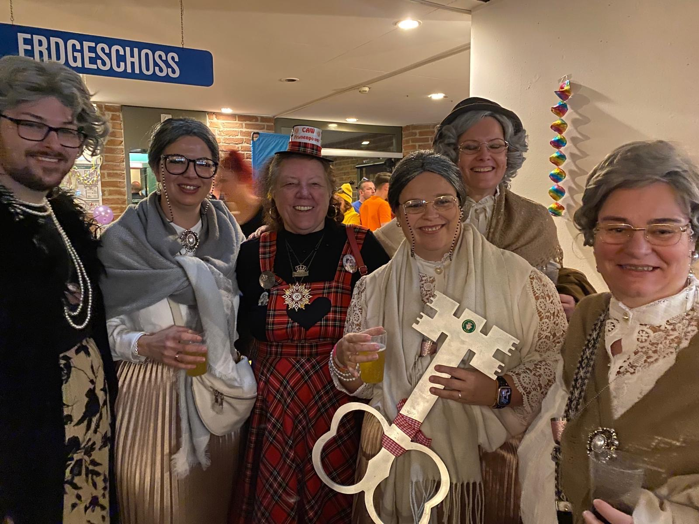
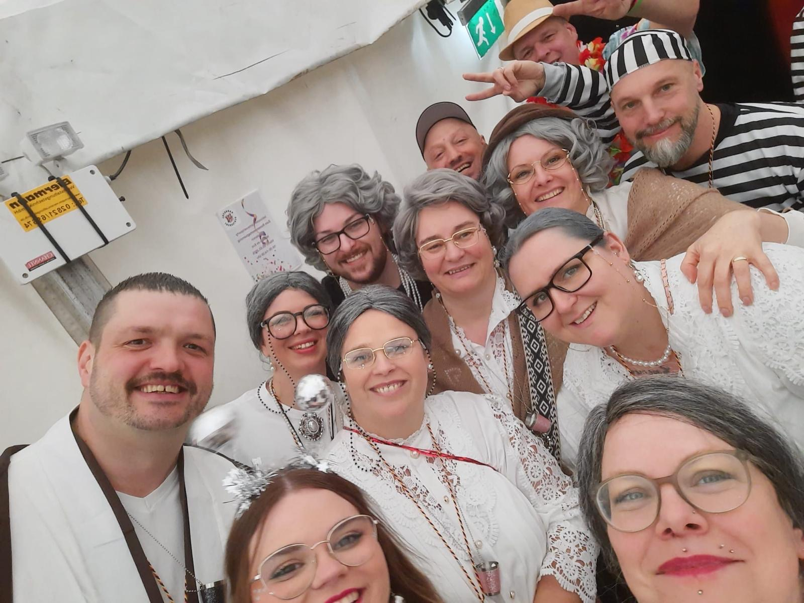
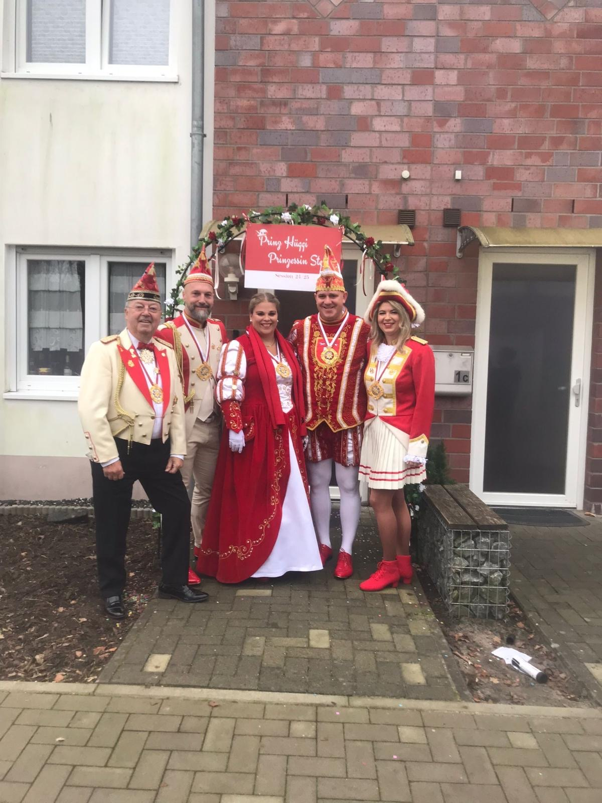
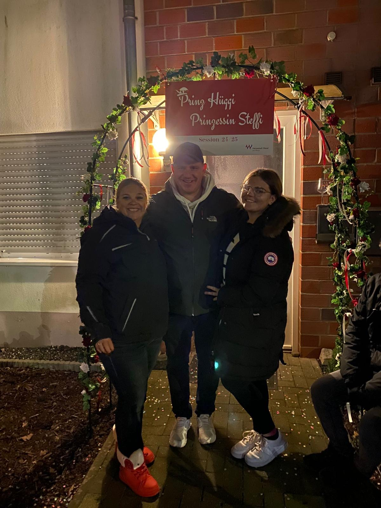
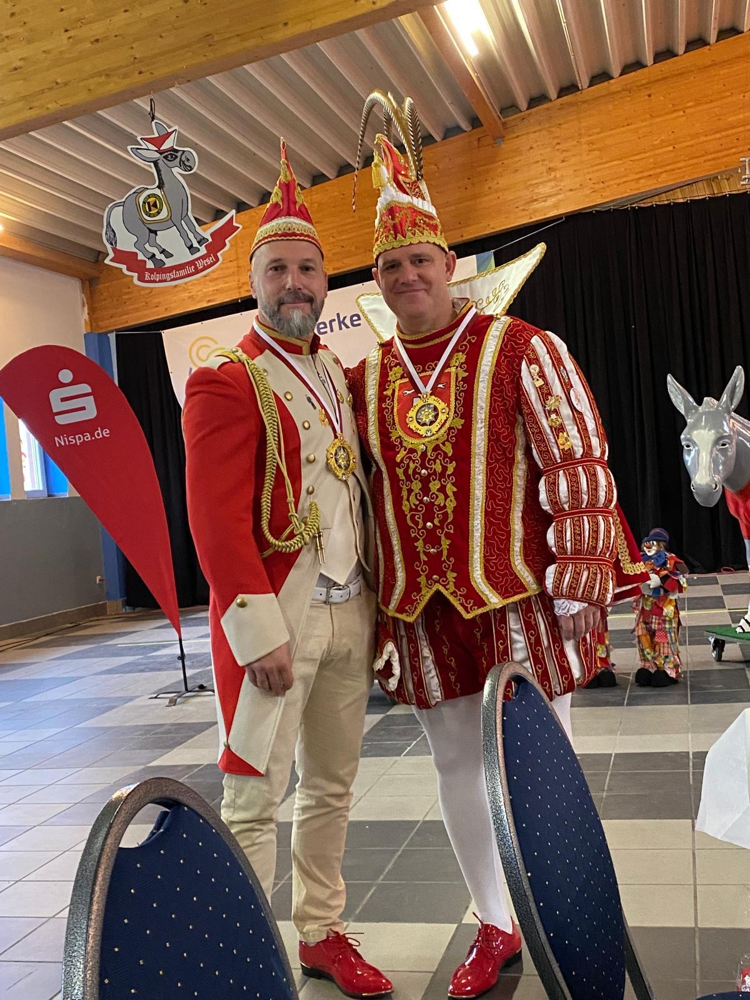
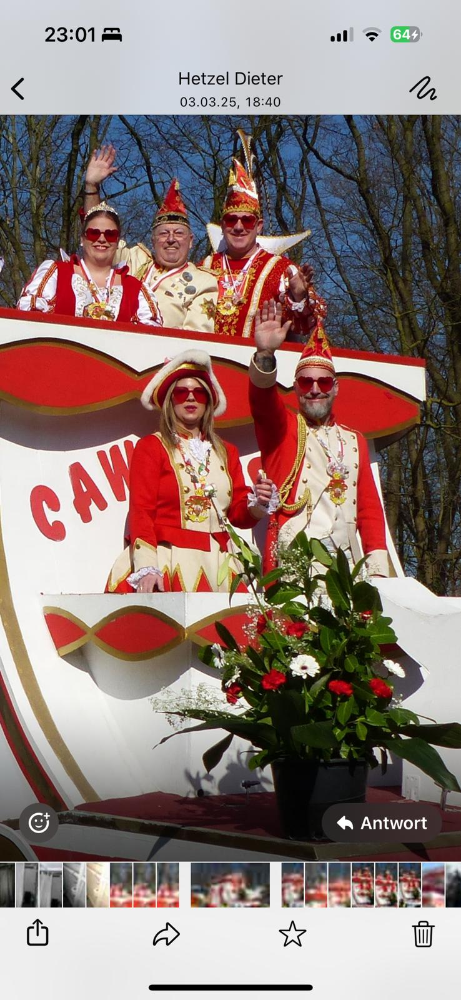

Patrick II. &
Prinzessin Stephanie I.
Ein Ehepaar an der Spitze des Weseler Karnevals – mit Page Timo, Pagin Dominika und Prinzenführer Luc Eben an ihrer Seite.
Eine Session voller Begegnungen, Tradition und Lebensfreude
Mit Patrick II. und Prinzessin Stephanie I. regierte in der Session 2024/25 ein Ehepaar das Weseler Narrenvolk. Gemeinsam gingen sie durch eine lange und ereignisreiche Session – von der feierlichen Proklamation über zahlreiche Begegnungen bis zu Altweiber und dem großen Rosenmontagszug.

Gemeinsam auf den närrischen Thron
Patrick und Stephanie waren nicht nur im Karneval ein Paar. Als Ehepaar gingen sie gemeinsam in ihre besondere Session und standen bei Terminen, Auftritten und Begegnungen Seite an Seite. Ihre Session verband das offizielle Ornat mit genau den persönlichen Momenten, von denen der Karneval lebt.

Großer Bahnhof bei der Proklamation
Im Deichhaus auf der Grav-Insel begann die Session mit einem großen närrischen Auftakt. Vor rund 500 Gästen zog das neue Prinzenpaar gemeinsam mit dem Weseler Karneval ein. Zepter und Krone machten aus Patrick und Stephanie offiziell die Tollitäten der Stadt Wesel. Am selben Tag wurde auch Kinderprinzessin Elaine I. proklamiert.
Die damalige Bürgermeisterin Ulrike Westkamp und der damalige CAW-Präsident Lars Gehrke begleiteten die feierliche Proklamation.
Eine Session lebt von den Menschen
Gastvereine, Tanzgruppen, befreundete Tollitäten und viele persönliche Begegnungen prägten die Monate zwischen Proklamation und Rosenmontag. Nicht jeder Moment spielte auf einer großen Bühne – gerade die vielen kleinen Treffen machten die Session persönlich.


Stephanie I. übernimmt als Obermöhne das Rathaus
An Altweiber führte Prinzessin Stephanie I. den Rathaussturm als Obermöhne an. Passend zum Tag zog sie im augenzwinkernden Oma-Look los, während Patrick II. und sein Page im schwarz-weißen Sträflingslook unterwegs waren – schließlich hatten die Männer an diesem Tag bekanntlich wenig zu melden.
Mit einer Polonaise zog die närrische Gesellschaft ins Rathaus ein. Stephanie übernahm den Stadtschlüssel und auch die traditionelle Schere kam zum Einsatz: Die Krawatten der Dezernenten mussten daran glauben.




Der krönende Abschluss auf dem Prinzenwagen
Bei strahlendem Sonnenschein bestiegen Patrick II. und Stephanie I. gemeinsam mit Page Timo, Pagin Dominika, Stadtpolizist Fabian und Prinzenführer Luc Eben den Prinzenwagen. Als Abschluss des Weseler Rosenmontagszuges zogen sie durch eine dicht gefüllte Innenstadt.
Der Zug startete um 12:46 Uhr an der Kolpingstraße. Wegen einer Baustelle musste die Strecke angepasst werden. Kamelle flogen, Konfetti lag in der Luft und entlang der Straßen wurde getanzt, gewunken und „Wesel Helau!“ gerufen – ein Rosenmontag, der den Schlusspunkt unter eine lange Session setzte.

Von der Proklamation bis zum Rosenmontag
Die Session 2024/25 war geprägt von offiziellen Höhepunkten und vielen persönlichen Begegnungen. Patrick II. und Stephanie I. repräsentierten den Weseler Karneval gemeinsam und erlebten mit ihrem Hofstaat, Prinzenführer Luc Eben und den Weseler Karnevalsvereinen eine intensive närrische Zeit.
„Tradition lebt dort, wo Menschen gemeinsam feiern, lachen und Erinnerungen schaffen.“